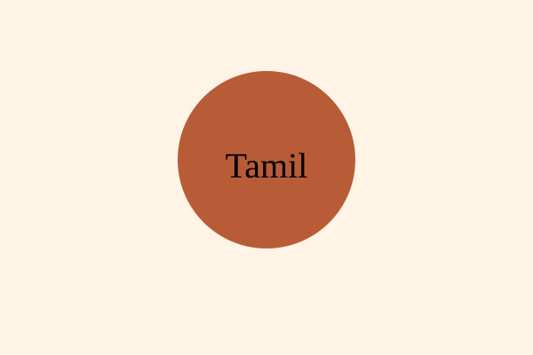
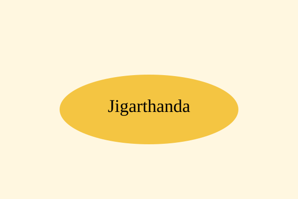

About Madurai
Madurai is one of India's oldest continuously inhabited cities, situated on the banks of the Vaigai River. Known as the Temple City, it has been a major center of Tamil language, literature, trade, and spirituality for over two millennia.
Temples & Heritage
The iconic Meenakshi Amman Temple dominates the city's identity with towering gopurams, intricate sculptures, and vibrant rituals. Other notable landmarks include Thirumalai Nayakkar Mahal and Koodal Azhagar Temple.
Culture & Traditions

Madurai is deeply connected to Tamil heritage, classical arts, Bharatanatyam, Carnatic music, Sangam literature, and colorful festivals including Chithirai Festival.
Food & Flavours

Madurai is famous for Jigarthanda, Kari Dosa, Parotta, Idli, Pongal, and vibrant street food culture that reflects authentic South Indian cuisine.